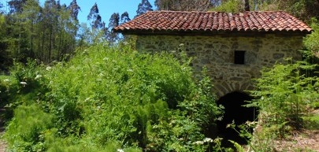

"Ruta de los molinos"
Quedada a las 11:00 de la mañana, el 25 de Marzo de 2020. Centro de interpretación Turistico de Corvera, situado en Molleda, 9:00 (Llegaremos aproximadamente a la hora de comer)
Descripción de la ruta
Recorrido 6,3 km.
Esta ruta es un itinerario sin mucha dificultad que nos permitirá contemplar la práctica totalidad de los molinos que funcionaban en el municipio de Illas. El tiempo de duración del recorrido es de aproximadamente dos horas y sin grandes desniveles de terreno, siendo la cota más baja de altitud 80 metros en el puente de las Rodadas y la máxima en Joyana, 180 metros. El itinerario será fácil de seguir atendiendo a las señalizaciones instaladas a lo largo del recorrido. Albergue de Sanzadornín. Tomaremos como punto de partida este albergue, donde podemos contemplar la capilla de la Virgen de los Remedios. Al otro lado de la carretera se encuentra la fuente del mismo nombre, donde podemos aprovisionarnos de agua. En este primer tramo nos limitaremos a seguir la carretera AS-321 en dirección a Avilés, paralelo al río Roxico, que es el que alimenta los dos primeros molinos que son: Molino de la Vega, pequeño molino restaurado situado en la margen derecha del arroyo Roxico. Molino de Llana, antiguo molino vivienda, en la actualidad en desuso, situado en la margen izquierda del mismo arroyo. A partir de este primer tramo y coincidiendo con el límite de los municipios de Illas y Corvera, tomamos un camino a la izquierda por el que remontaremos el río principal del municipio de Illas, al cual confluyen la práctica totalidad de sus aguas. En este tramo son de interés:
Puente de las Rodadas, límite entre Illas y Corvera. Prados de San Féliz, donde antiguamente existía una ermita con el mismo nombre. Molino de Velasco, fue restaurado en 1999 respetando los elementos tradicionales del mismo y actualmente se conserva en perfecto estado.
Ruinas de la antigua central eléctrica que suministraba agua a la mayor parte del municipio hasta principios del siglo XX.
Molino de las Vegas, que fue empleado como vivienda, si bien hoy está abandonado; aquí se encontraba un antiguo caserío.
Palacio de Bárzana, con torre y capilla del siglo XVI-XVII.
Molino de Sollovio, enclavado en las cercanías de Callezuela, accederemos a él por un camino que parte de al lado de la Iglesia. Aquí se da por finalizada la ruta.